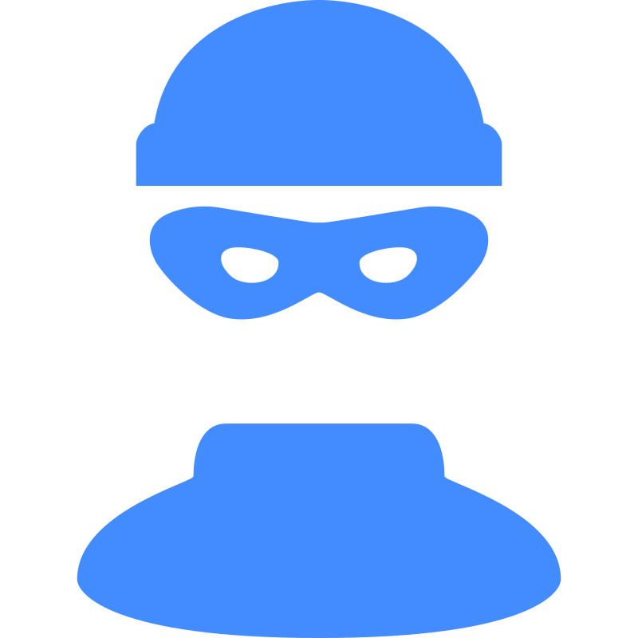

Informacion de {{ animal.nombre }} No.{{ animal.numero}}
Informacion de Basica:



Nombre: {{ animal.nombre }}
Numero: {{ animal.numero}}
Fecha de nacimiento: {{ animal.fechaNacimiento | date:'dd-MM-yyyy' }}
Sexo: {{ animal.sexo }}
Raza: {{ animal.raza }}
Edad: {{ animal.edad.years }} años, {{ animal.edad.months }} meses, {{
animal.edad.days }} días ({{ animal.esBecerro ? 'Joven' : 'Adulta' }})
Nombre del padre:
{{ animal.nombrePadre }}
- No.
{{ animal.numeroPadre }}
{{ animal.nombrePadre }} - No. {{ animal.numeroPadre }}
No definido
Nombre de la madre:
{{ animal.nombreMadre }}
- No.
{{ animal.numeroMadre }}
{{ animal.nombreMadre }} - No. {{ animal.numeroMadre }}
No definido
Edad al primer parto: {{ animal.edadPrimerParto }} año(s)
Hijos:
Nombre:
{{ hijo.nombre }}
- No.
{{ hijo.numero }}
Este animal no tiene hijos.
Enfermedades y/o Deformaciones:
{{ condicion.nombre }}
Enfermedades curadas:
{{ condicion.nombre }}
Este animal está sano